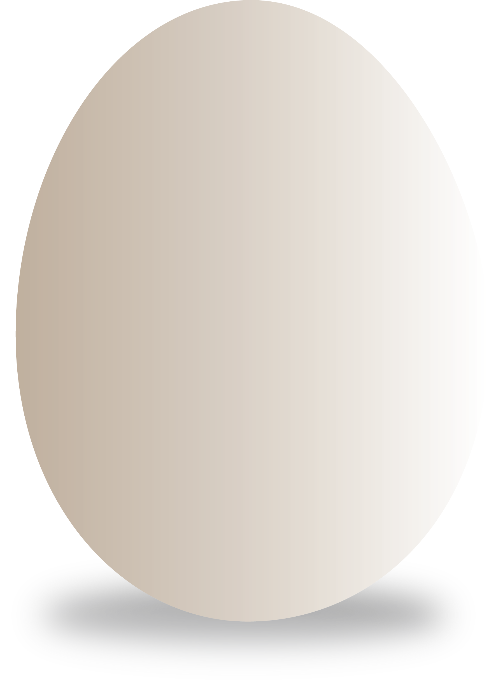

Want to know what is Psychological Boundaries?

PSYCHOLOGICAL
BOUNDARIES
ARE LIKE
EMOTIONAL EGGSHELLES,
PROTECTING US
AS INDIVIDUAL
IN OUR RELATIONSHIPS.
BOUNDARIES
ARE LIKE
EMOTIONAL EGGSHELLES,
PROTECTING US
AS INDIVIDUAL
IN OUR RELATIONSHIPS.

The hexagon theory of psychological boundaries holds that psychological boundaries can be understood in terms of six components that together can be viewed as forming the parts of a hexagon. The hexagon is used as a metaphor, rather than as a strict geometric model.
These six components are Control, Expectation, Refusal, Independence, Respectation and Indentification.
Introduction
This project is about psychological boundaries. Everyone has two kinds of living space, physical space and mental space. Personal boundaries mianly divided to physical and psychological boundaries. In contrast to the physical boundaries, psychological boundaries are invisible and untouchable. So we used to ignore psychological boundaries. However, psychological boundaries affect our interactions with others and can cause many relationship problems.
Start To Try
➡︎